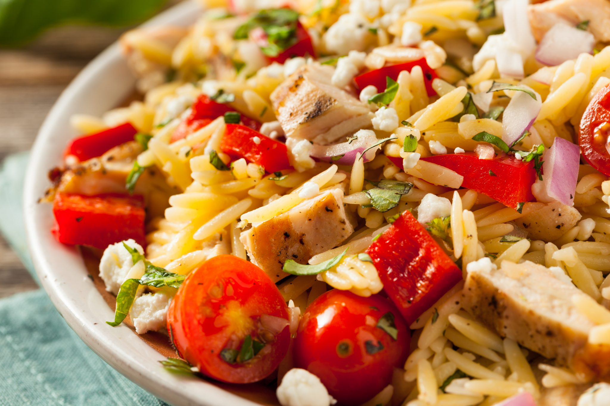

Recetas Fit
Pollo la naranja
El pollo a la naranja es una comida típica de Asia. No tiene nada que ver con el pato al horno a la naranja, plato típico francés. En este caso, se trata de unas pechugas de pollo cocinadas junto a una salsa hecha a base de zumo de naranja. Se puede acompañar de un arroz blanco, que le va a venir «al pelo» a este plato. Es muy fácil y rápido de hacer, como casi todo lo que el vitoriano Gorka Barredo propone en esta web. Lo tendrás listo en cuestión de 30 minutos. O menos. Una receta de pollo deliciosa. Para preparar tu pollo ala naranja necesitarás los siguientes ingredientes.
Ingredientes
- 2 pechugas de pollo
- 1 cebolla
- 4 naranjas
- 2 cucharadas de sala de soja
- 2 dientes de ajo
- chorrito de vinagre
- 1 cucharada de azucar
- 2 cucharadas de maizena
- sal y pimenta a gusto
- aceite de oliva
- Perejil fresco
Preparacion

- Priemero Preparamos la salsa. Para ello, exprimimos las naranjas en un bol. Añadimos la salsa de soja, los dientes de ajo picados, el chorrito de vinagre, el azúcar, la maizena, que espesará la salsa en la cocción y un poco de sal y de pimienta negra recién molida. Puedes añadir aquí el pollo y dejarlo macerar durante una hora o, puedes pasar directamente al siguiente paso.
- En una sartén a fuego medio, añadimos un chorrito de aceite. Cuando esté caliente añadimos la cebolla picada muy finamente. Salpimentamos y dejamos cocinar 5 minutos, mientras removemos de vez en cuando con una cuchara de palo.
- Seguimos con la receta del pollo a la naranja. Pasado el tiempo, subimos la potencia del fuego y añadimos las pechugas de pollo, que ya están previamente cortadas en tamaño de bocado y salpimentadas. Mezclamos con la cebolla y sellamos los taquitos durante un par de minutos.
- Hecho esto, añadimos la salsa que habíamos preparado al principio. Bajamos la potencia del fuego y vamos cocinando a fuego suave, mientras mezclamos con la cuchara. La salsa irá reduciéndose un poco mientras también se va espesando por efecto de la maizena. Finalmente, puedes espolvorear con perejil fresco.
Ensalada de arroz con pollo asado
Ingredientes
- 200g de arroz basmati
- 50g de maiz en grano
- 100g de Esparragos verdes Cocidos
- 100g de tomates
- 2 cucharadas soperas de aceite de oliva
- 1 cucharada sopera de vinagre de jerez
- 1 cucharada de Mayonesa (se puede obviar)
- Comino molido a gusto
- Sal y pimienta a gusto
- 200g Pechuga de pollo asado
Preparacion
- En primer lugar dejamos en remojo unos minutos el arroz basmati mientras comenzamos ya preparando el aliño. Cuando pasen unos minutos sacamos el arroz y lo cocemos unos doce minutos o seguimos las indicaciones del fabricante.
- Continuamos con el aliño para el cuál mezclamos el aceite, la mayonesa, el vinagre y una pizca de comino molido hasta que emulsione. Por otro lado cortamos los espárragos verdes y los tomates en pequeños trozos. Escurrimos el líquido del maíz y ya tenemos también lista la verdura.
- El pollo asado lo preparamos también porciones pequeñas, y si tenemos la salsa del pollo al asarse la incluimos también en nuestro aliño. Y una vez tenemos todo cortado y preparado mezclamos todos los ingredientes y añadimos el aliño justo antes de comernos nuestra ensalada de arroz.
- Y con esta receta tan fácil tendríamos una cena rápida y completa que nos ayuda a rellenar esos depósitos de energía consumidos con el entrenamiento, a la vez que la proteína necesaria para nuestra salud muscular. Sin olvidarnos de los antioxidantes, vitaminas y minerales de la verdura que son imprescindibles para que el cuerpo ejerza sus labores de reparación post ejercicio.